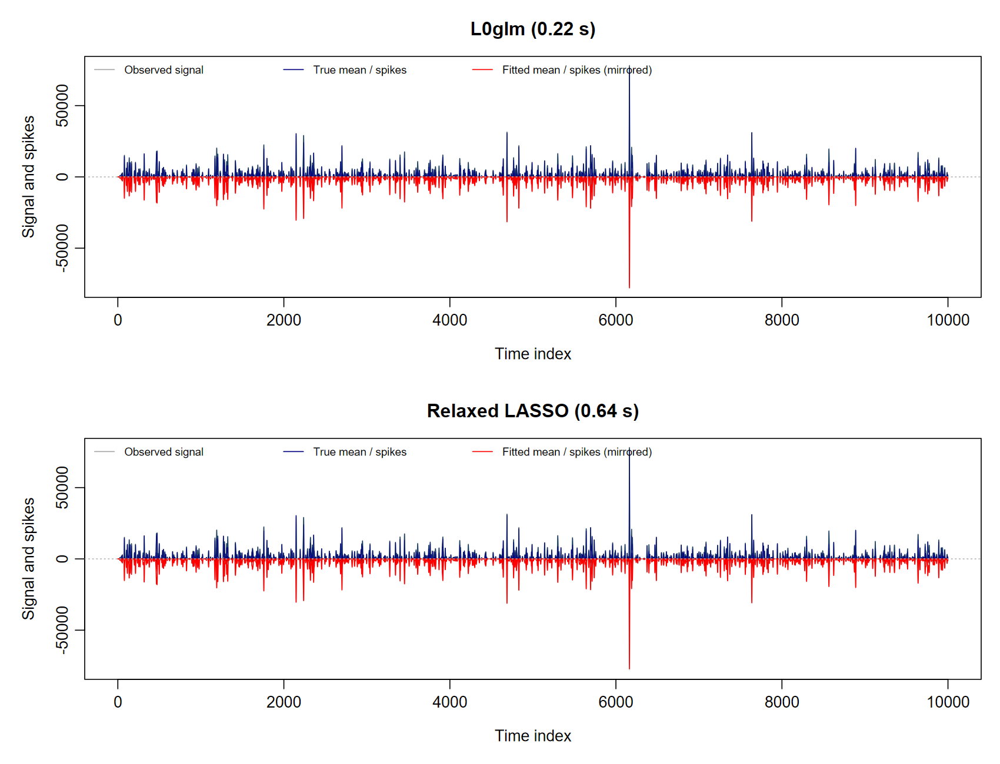
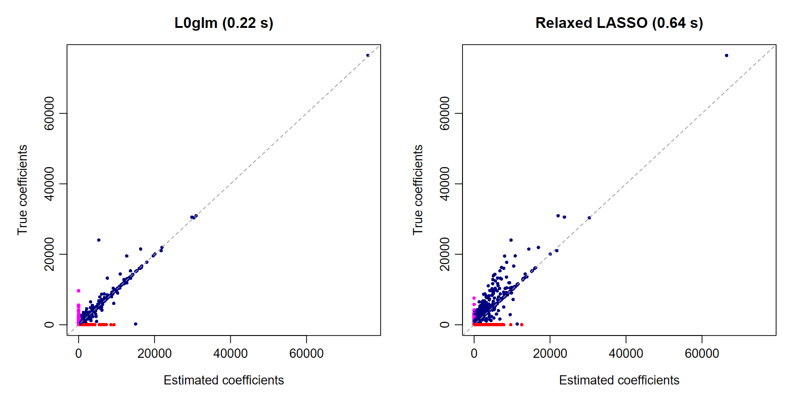
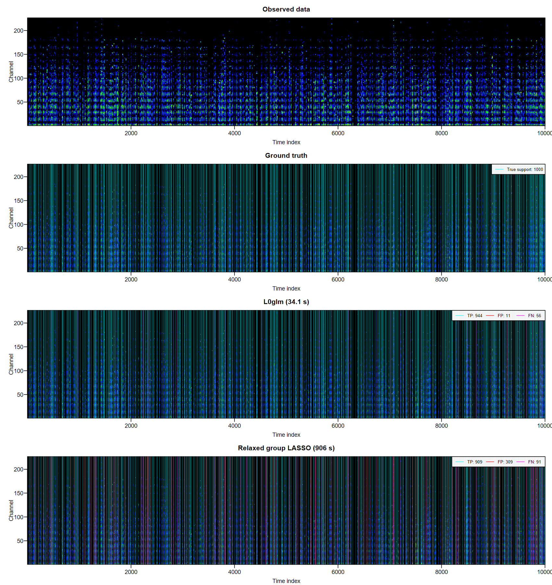
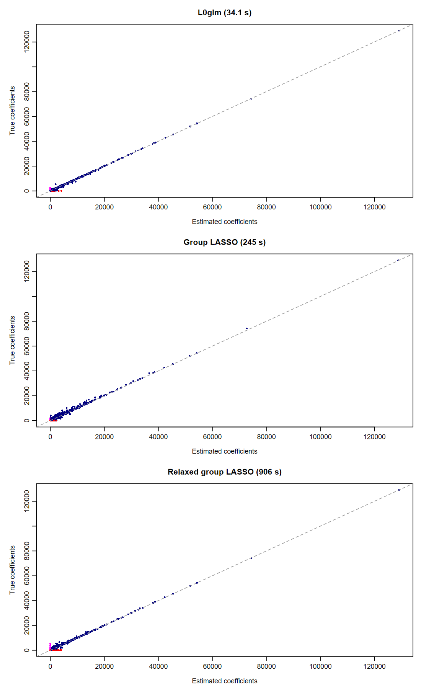

The L0 deconvolution idea was inspired by work by de Rooi & Eilers
(2011). Our methods for automatically setting regularization, the
extensions to Poisson or negative-binomial noise, and the multichannel
shared-support extensions are new developments of the present work.
simul() supports all three noise models.
In deconvolution, a design matrix contains shifted copies of the peak-shape function, also called the point spread function. Sparse coefficients represent sharp events, while the measured signal is blurred and noisy. For nonnegative Poisson intensities,
Y_i\sim\operatorname{Poisson}\{(X\beta)_i\},\qquad\beta\geq0.
The following examples each have 10,000 observations, 10,000 candidate peak locations and 1,000 true peaks. L0glm fits the Poisson likelihood directly; the native OpenMP backend shares the sparse convolution design across channels. L0glm uses the GIC preset. Competing LASSO methods use ten lambda values, selected by GIC or native five-fold CV with weighted prediction error. See benchmark hardware and timing conventions.
Single channel deconvolution
library(L0glm)
single <- simul(method=2L, n=10000L, p=10000L,
n_nonzero=1000L, seed=2L)
system.time(fit <- L0glm.fit(single$X, single$y, family=poisson("identity"),
lambda="gic", nonnegative=TRUE, intercept=FALSE, relaxed=TRUE,
parallelize=TRUE, ncores=4L))
L0glm.metrics(fit, beta_true=single$beta_true)[c("gic", "TP", "FP", "FN", "TN",
"F1_score", "MCC")]L0glm recovers 845 of 1,000 true peaks with just 154 false positives in 0.20 seconds: 2× faster than GIC-tuned LASSO and 34× faster than relaxed LASSO tuned by five-fold CV in this comparison.
| Method | Selection | Seconds | GIC | TP | FP | FN | TN | F1 | MCC |
|---|---|---|---|---|---|---|---|---|---|
| L0glm | GIC preset | 0.20 | 102682 | 845 | 154 | 155 | 8846 | 0.845 | 0.828 |
| LASSO | GIC path | 0.40 | 145904 | 950 | 2096 | 50 | 6904 | 0.470 | 0.467 |
| Relaxed LASSO | GIC path | 0.64 | 122083 | 905 | 999 | 95 | 8001 | 0.623 | 0.607 |
| LASSO | 5-fold CV | 4.83 | 146234 | 951 | 2146 | 49 | 6854 | 0.464 | 0.462 |
| Relaxed LASSO | 5-fold CV | 6.70 | 133122 | 920 | 1523 | 80 | 7477 | 0.534 | 0.524 |
The table compares the GIC-preset fit with LASSO and fully relaxed
LASSO, each selected by GIC or five-fold CV over the same ten-value
lambda grid. The GIC comparison is available through
sparseglm():
gic <- sparseglm(single, family=poisson("identity"),
method=c("lasso", "relaxed_lasso"), tune="gic", nlambda=10L,
nonnegative=TRUE, intercept=FALSE, approximation="wls")The observed and true signal are shown above zero; fitted signals and estimated spikes are mirrored below in red. These panels zoom into the first 1,000 time points, using the same vertical scale for both methods. They compare L0glm with the strongest competing method in this example, ranked by support MCC.

The coefficient comparison retains all 10,000
predictors and shows estimation accuracy and the additional
coefficients selected by the competing method. Each common
(0,0) is plotted once.

Multichannel deconvolution
Gas chromatography–mass spectrometry (GC/MS) provides a natural application: compounds with overlapping chromatographic peaks contribute counts across many mass-to-charge channels. Peak locations are shared across channels, while each compound has its own sparse mass spectrum. A grouped Poisson model recovers the peak locations and the corresponding spectra together.
The simulation retains all 226 informative mass channels generated from the spectral library. No channels are discarded for fitting or plotting.
multi <- simul(method=4L, n=10000L, p=10000L,
n_nonzero=1000L, seed=2L)
system.time(fit_multi <- L0glm.fit(multi$X, multi$y, family=poisson("identity"),
lambda="gic", nonnegative=TRUE, intercept=FALSE, grouped=TRUE, relaxed=TRUE,
parallelize=TRUE, ncores=4L))
L0glm.metrics(fit_multi, beta_true=multi$beta_true)[c("gic", "TP", "FP", "FN", "TN",
"F1_score", "MCC", "within_row_F1_score", "within_row_MCC")]L0glm recovers 944 of 1,000 true peaks with just 11 false positives in 9.63 seconds: 25× faster than GIC-tuned group LASSO and 332× faster than relaxed group LASSO tuned by five-fold CV in this comparison.
| Method | Selection | Seconds | GIC | TP | FP | FN | TN | F1 | MCC | Within-row F1 | Within-row MCC |
|---|---|---|---|---|---|---|---|---|---|---|---|
| L0glm | GIC preset | 9.63 | 5615963 | 944 | 11 | 56 | 8989 | 0.966 | 0.962 | 0.909 | 0.864 |
| Group LASSO | GIC path | 244.87 | 7413616 | 980 | 860 | 20 | 8140 | 0.690 | 0.685 | 0.842 | 0.768 |
| Relaxed group LASSO | GIC path | 906.34 | 6138687 | 909 | 309 | 91 | 8691 | 0.820 | 0.802 | 0.853 | 0.782 |
| Group LASSO | 5-fold CV | 813.42 | 9639345 | 998 | 4242 | 2 | 4758 | 0.320 | 0.316 | 0.886 | 0.830 |
| Relaxed group LASSO | 5-fold CV | 3199.62 | 6198648 | 962 | 502 | 38 | 8498 | 0.781 | 0.769 | 0.856 | 0.785 |
Row F1 and MCC measure recovery of peak times. Within-row F1 and MCC
measure mass-spectrum sparsity among correctly recovered true-positive
peaks. Group LASSO and relaxed group LASSO use glmnet’s grouped Gaussian
approximation, with shared row weights 1/(rowMeans(y)+0.1);
every selected model is evaluated using the original Poisson likelihood
and the same GIC. Each glmnet path has ten lambda values. Relaxed group
LASSO refits the selected shared row support with gamma=0.
Native cv.glmnet() selects the minimum weighted prediction
error using five common random folds and four parallel workers. L0glm
uses a single GIC preset with four outcome-fitting threads. CV timings
include worker startup and the full-data refit; simulation and final
metric reporting are excluded. The L0glm time is the median of three
fits with matching coefficients.
gic_multi <- sparseglm(multi, family=poisson("identity"),
method=c("lasso", "relaxed_lasso"), tune="gic", nlambda=10L,
nonnegative=TRUE, intercept=FALSE, approximation="wls_grouped")The benchmark source reproduces both selection rules, the timings and every reported metric.
Correlated peaks and group LASSO
Shifted copies of the point-spread function are strongly correlated. For this design, the standard group-LASSO irrepresentability diagnostic is 20.54, well above the bound of one. This helps explain why group LASSO can retain many neighbouring peak locations even while reconstructing the observed signal well. L0glm’s direct support penalty gives a much cleaner separation of the peaks.
To compute the diagnostic, let A be the shared-row-weighted design with columns scaled to unit norm, S the true row support and U_{j\cdot}=B^*_{j\cdot}/\|B^*_{j\cdot}\|_2. We evaluate
\max_{j\notin S}\left\| A_j^\top A_S(A_S^\top A_S)^{-1}U_S \right\|_2.
For ordinary group LASSO, the corresponding population quantity must be at most one to achieve consistent coefficient estimation together with exact group-support recovery; a strict inequality gives a sufficient condition under the assumptions of Bach (2008), Theorems 2–3. If that population condition remains violated, increasing the sample size alone cannot make the probability of recovering the true groups tend to one while also consistently estimating their coefficients, whatever regularization sequence is used. Strong predictor dependence can therefore remain an obstacle even with extremely large datasets.
The value above is a fixed-design diagnostic for the unconstrained weighted-Gaussian group model; the benchmark additionally uses nonnegativity constraints and Poisson scoring. The diagnostic script gives the calculation and numerical solve check.
Reference: Bach, F. R. (2008). Consistency of the Group Lasso and Multiple Kernel Learning. Journal of Machine Learning Research, 9, 1179–1225.
Compare the recovered signals and spectra
Heatmaps stack the observed data, ground-truth coefficients and selected methods on one page. Coefficient panels share a colour scale; observed counts have their own intensity scale. Cyan overlays mark true support or true positives, red marks false positives and magenta marks false negatives. Legends also give the counts. Every channel is retained.

Multichannel true-versus-estimated coefficient panels use a single column. Blue points are correctly recovered nonzero coefficients, red points are false positives and magenta points are false negatives.

Cluster channels for faster support selection
For multichannel nonnegative Poisson models,
precluster=TRUE first clusters and sums channels, selects
promising peak locations in that reduced problem, then refines the fit
on every original channel. cluster.refit=FALSE instead
returns coefficients for the summed cluster outcomes.
Both Ward and Bregman clustering use channel totals as size factors,
size_fac=colSums(Y). This accounts for differences in
overall ion intensity while comparing the shapes of the chromatographic
traces. The regression stages use the raw counts. Ward uses a smoothed
Poisson dissimilarity; Bregman merges groups using their actual pooled
Poisson likelihood loss.
clustered <- L0glm.fit(multi$X, multi$y, family=poisson("identity"),
lambda="gic", nonnegative=TRUE, grouped=TRUE, relaxed=TRUE,
precluster=TRUE,
control.precluster=list(linkage="ward", rowbins=5L, k.max=32L))
clustered$preclustering$seconds
L0glm.metrics(clustered, beta_true=multi$beta_true)[c(
"gic", "F1_score", "MCC", "within_row_F1_score", "within_row_MCC")]Five-scan binning speeds up clustering of these ordered traces;
fitting retains every scan. linkage="bregman" provides the
alternative likelihood-based hierarchy with the same size factors. For
CV, memberships and size factors are learned separately in each training
fold. See channel
preclustering for controls, starting values and aggregate-only
output.
A smooth nonnegative background
For a full chromatogram, add a low-df B-spline basis to describe the
slowly varying background. Keeping these columns in
always.include leaves them unpenalized. L0glm alternates a
small constrained background solve with sparse peak fitting, using every
original mass channel. For Poisson identity models, the spline
contribution is directly additive in signal units.
B <- splines::bs(seq(0, 1, length.out=nrow(multi$X)), df=6, intercept=TRUE)
Z <- cbind(multi$X, Matrix::Matrix(B, sparse=TRUE))
compulsory <- ncol(multi$X) + seq_len(ncol(B))
background_fit <- L0glm.fit(Z, multi$y, family=poisson("identity"),
lambda="gic", nonnegative=TRUE, always.include=compulsory,
grouped=TRUE, relaxed=TRUE, precluster=TRUE,
control.precluster=list(k.max=32L, rowbins=5L))
background <- B %*% as.matrix(coef(background_fit)[compulsory, , drop=FALSE])
peak_coefficients <- coef(background_fit)[seq_len(ncol(multi$X)), , drop=FALSE]
background_fit$nuisance$secondsThe same compulsory-block approach supports Gaussian and negative-binomial models and other scalar GLM links. The background is additive on the chosen link scale. Automatic channel aggregation remains specific to nonnegative identity-link Poisson models. See compulsory terms and backgrounds for the equations, constraints and initialization.
Regularization and tuning
An automatically preset level of regularization with
lambda="gic" typically provides a near-optimal sparse
solution straight away. Tuning over a lambda grid or cross-validation
remains available to refine regularization further or optimize
out-of-sample predictive performance.
gic <- L0glm.tune(multi$X, multi$y, family=poisson("identity"),
tune="gic", nlambda=10L, nonnegative=TRUE, grouped=TRUE, relaxed=TRUE)
cv <- L0glm.tune(multi$X, multi$y, family=poisson("identity"),
tune="cv", nfolds=5L, nlambda=10L, nonnegative=TRUE, grouped=TRUE, relaxed=TRUE)See the full benchmark tables for the preset and tuned fits.